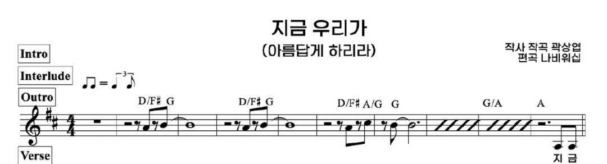
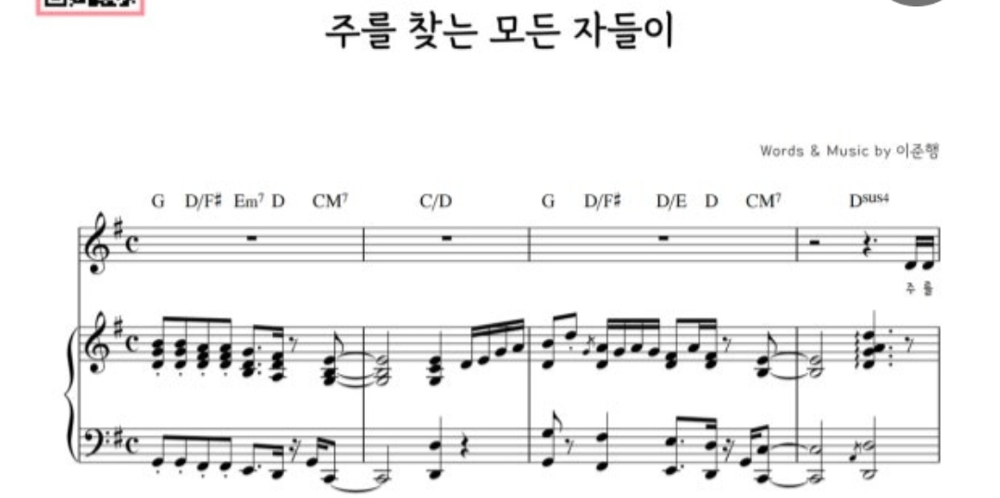
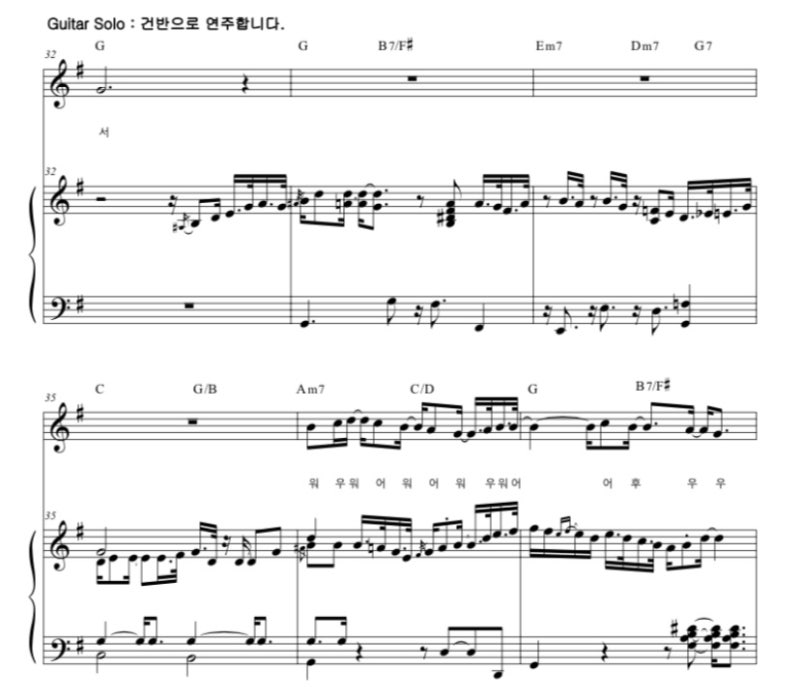
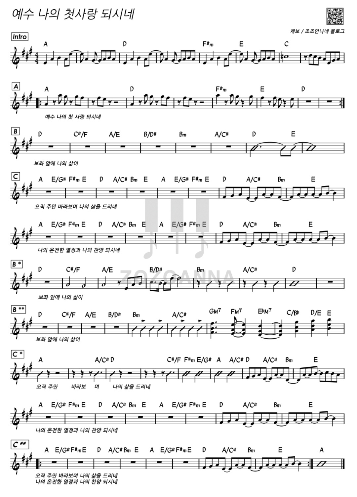
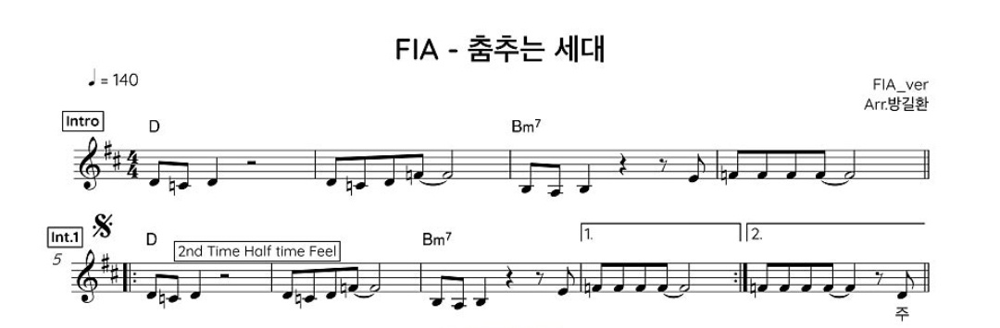
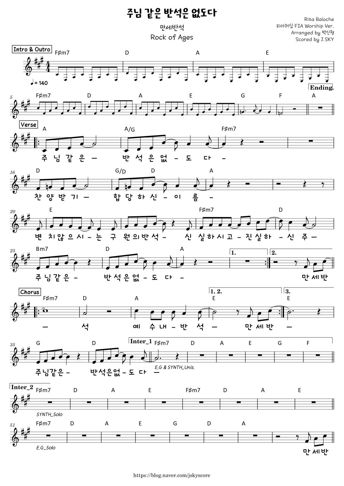
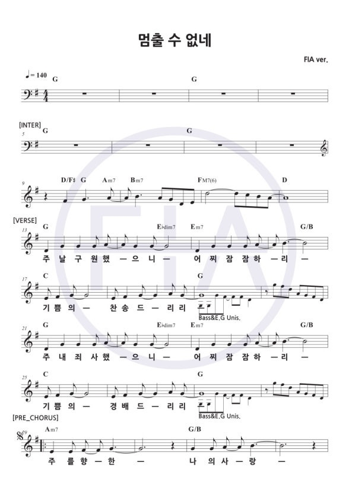
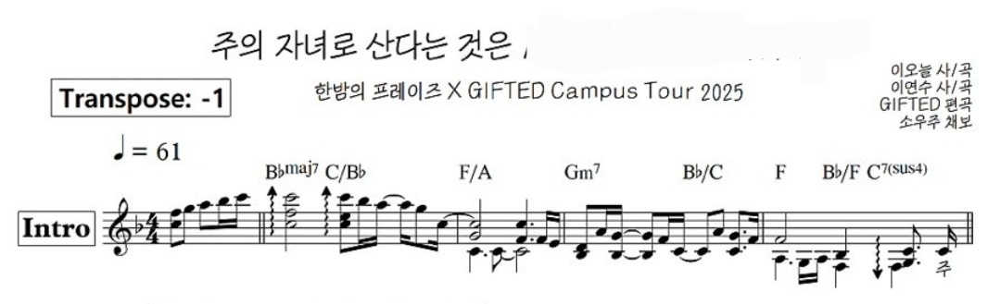
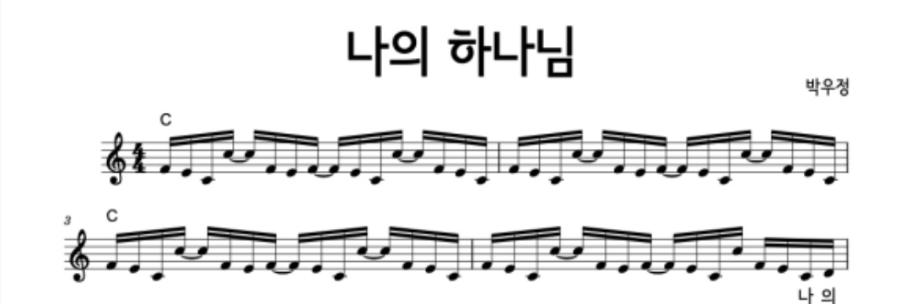

2026-09-23 revised
🎹 세컨 건반 음색 세팅 요약 (KORG Krome EX)
A016 Slow Strings — 느린 발라드용 현악기
A028 Synth Sweep Pad — 신비로운 분위기 연출 및 패드
A050 Stage EP — 16비트 바운스 리듬용 일렉 피아노
B001 Synth Brass — 빠른 곡 일렉 기타 리프/뱅킹 대용
C005 Square Lead — 시그니처 대표 멜로디 및 리드
1. 지금 우리가 주님 안에 하나가 되어
▶ YouTubeIntro/Interlude 악보

- 8비트 탄탄함: 가볍지 않게 드럼과 베이스가 기준 박자를 단단하게 잡아줍니다.
- Inter 구간 코드: G/D 코드 진행 시 베이스가 D 음을 계속 깔아줄지, G 음으로 옮겨갈지 사전에 약속합니다.
- 8비트 리듬을 밀리지 않게 또박또박 쳐서 전체 박자를 이끕니다.
B001 Synth Brass
B 파트와 리듬 쉼표 구간을 강한 브라스 소리로 찔러주어 일렉 기타의 빈자리를 단단히 메꿔줍니다.
- 8비트 기본 박자를 단단하게 치고, 멘트 끝난 후 Intro로 들어갈 때 돋보이게 심벌을 쳐서 신호를 줍니다.
- 드럼 킥 소리에 딱 맞춰서 8비트로 같이 찍어줍니다.
2. 주를 찾는 모든 자들이
▶ YouTubeIntro/Interlude 악보


- 16비트 바운스(통통 튀는 리듬): 드럼과 베이스가 16비트 셔플 리듬을 딱 맞춰야 곡이 살고 안 흔들립니다.
- Inter 2 직전 B 마지막 마디 생략: B 파트 끝에서 한 마디를 일찍 끊고 Inter 2로 넘어가므로 다 함께 마디를 세어야 합니다.
- Guitar Solo 구간(32~37마디)은 건반으로 연주: 코드는 G – G – B7/F# – Em7 – Dm7 – G7 – C – G/B – Am7 – C/D – G – B7/F# 순으로 진행됩니다.
- 경쾌하고 가벼운 터치로 바운스 리듬을 끌고 가며, Guitar Solo 구간은 메인 건반이 악보의 멜로디 라인을 그대로 담당합니다.
A050 Stage EP
EP 소리 하나로 고정하여 16비트 바운스 코드를 통통 튕겨 연주합니다.
- 통통 튀는 16비트 하이햇 리듬을 살리고, 솔로 보컬 구간에서는 스네어 테두리(림샷)를 쳐서 소리를 줄여줍니다.
- 16비트 바운스 박자에 맞춰 쉼표 박자를 칼같이 지켜 연주합니다.
3. 예수 나의 첫사랑 되시네
▶ YouTubeIntro/Interlude 악보

- 빠른 8비트 락 워십: 박자가 빨라지기 쉬우니 드럼이 템포가 달라지지 않게 꼭 잡아줍니다.
- C 파트 Break(뚝 끊기는 구간): 악기가 다 같이 동시에 딱 멈추는 타이밍을 완벽하게 맞춥니다.
- 8비트 옥타브 리프를 강한 터치로 신나게 칩니다.
A028 Synth Sweep Pad
곡 시작부터 끝까지 음색 변경 없이 고정. Intro에서는 강하게 터치해 Sweep 효과음을 내고, 이후 파트에서는 꾹 눌러 패드로 풍성하게 채워줍니다.
- 신나는 8비트 락 패턴을 밀고 가고, Break 구간에서 소리를 깔끔하게 끊어줍니다.
- 8비트로 강하게 연주하며 드럼 킥과 1:1로 딱 붙어서 연주합니다.
4. 춤추는 세대
▶ YouTubeIntro/Interlude 악보

- Intro 8마디 베이스 솔로: 베이스 혼자 시작하므로 베이스의 템포와 톤이 매우 중요합니다.
- 마디 수 체크: C 파트 연주만 나오는 구간과 Outro 반복에서 마디 수(4마디/8마디)를 똑같이 세어야 합니다.
- 강한 코드 컴핑으로 전체 흥을 밑에서 받쳐줍니다.
B001 Synth Brass
베이스 솔로 후 들어오는 시그니처 멜로디 및 B, C 파트에서 빵빵 터지는 브라스 리프를 확실하게 질러줍니다.
- 댄스 리듬 킥을 강하게 밟아주고, 마디가 바뀔 때 드럼 필인을 확실히 넣어줍니다.
- 이 곡의 리더. Intro 8마디 솔로 톤을 확실히 잡고, 멈추는 구간에서 소리를 잘 끊어줍니다.
5. 주님같은 반석은 없도다
▶ YouTubeIntro/Interlude 악보

- Inter 2 한 줄 생략: 악보와 다르게 Inter 2에서 한 줄을 안 치고 건너뛰므로 마디 수를 꼭 맞춥니다.
- 간주 리프 엇박자: 간주에서 악기들이 다 함께 맞춰 치는 엇박자 리듬을 깔끔하게 맞춥니다.
- 고스펠 느낌을 살려 신나고 리듬감 있게 피아노를 칩니다.
C005 Square Lead
신스 리드 소리로 엇박자 리듬을 같이 짚어주며 일렉 기타의 드라이브 톤 공백을 메워줍니다.
- 신나는 고스펠 느낌으로 스네어를 묵직하게 치고, Inter 2 생략 지점에서 들어오라고 신호를 줍니다.
- 기본 음 위주로 치되, 다 같이 맞추는 엇박자 리듬이 나올 때 박자를 딱 맞춥니다.
6. 멈출 수 없네
▶ YouTubeIntro/Interlude 악보

- Intro 및 Inter 대표 멜로디: 세컨 건반, 베이스, 기타가 다 함께 연주하는 라인을 완벽하게 맞춰야 합니다.
- 화려한 Outro 마무리: 마지막 마무리를 다 같이 크게 터뜨렸다가 한순간에 칼같이 맞춰 끝냅니다.
- 16비트로 쪼개는 팝 피아노 리듬을 끊어지지 않게 쳐줍니다.
C005 Square Lead
Intro, Inter, Bridge 구간에서 확실한 리드 음색으로 대표 멜로디 라인을 전담하여 연주합니다.
- 16비트 댄스 리듬을 깔끔하게 유지하고, Outro 피날레에서 탐탐과 심벌을 화려하게 쳐줍니다.
- Intro 대표 멜로디 필수 숙지. 건반과 똑같은 멜로디 라인을 16비트 박자로 맞춰 연주합니다.
7. 모든 상황 속에서
▶ YouTube- 볼륨 조절(다이내믹): 잔잔하게 시작해서 D 파트에서 크게 터지고, 기도회 후 다시 아주 조용해집니다.
- 기도회 후 D 파트 재진입: 기도회가 끝나고 조용한 D 파트로 돌아올 때 악기들이 절대로 세게 나오지 않도록 조심합니다.
- 잔잔하게 코드 음을 하나씩 펼쳐 치며(아르페지오) 부드럽게 연주합니다.
A028 Synth Sweep Pad
건반을 약하게 연주하여 따뜻하고 부드러운 패드 소리로 소리의 빈 공간을 채워줍니다.
- A 파트에서는 스네어 테두리(림탭)를 조용히 치다가, C/D 파트에서 분위기가 커질 때 스네어로 크게 연주합니다.
- A, B 파트에서는 음을 길게 늘려 치다가 D 파트에서 낮고 묵직한 소리로 곡을 받쳐줍니다.
8. 주의 자녀로 산다는 것은 / 예배합니다
▶ YouTubeIntro/Interlude 악보

- 느린 박자 유지: 박자가 느려지거나 빨라지지 않게 잔잔한 리듬을 일정하게 유지합니다.
- "예배합니다" 곡 연결: B2 파트가 끝난 뒤 자연스럽게 "예배합니다" 코드로 넘어가도록 세션 전체가 부드럽게 흐름을 연결합니다.
- 섬세하게 세기를 조절하며 보컬 분위기를 살려줍니다.
A016 Slow Strings
부드러운 현악기 소리로 마디 사이사이를 끊기지 않게 감싸듯 이어줍니다.
- A1~A2 파트는 조용히 가다가, Inter 4마디 구간부터 자연스럽게 리듬을 쪼개며 들어옵니다.
- 음을 길게 끌어주면서 느린 곡의 무게감을 밑에서 잡아줍니다.
9. 나의 하나님
▶ YouTubeIntro/Interlude 악보

- 특이한 마디 수 세기: Intro 4마디, Inter 2마디, C 파트 끝에 1마디 추가 등 마디 수가 변칙적이니 꼭 세면서 칩니다.
- 기도회 후 후렴 반복: 첫 번째 기도 후 2번, 두 번째 기도 후 3번 반복하는 규칙을 인도자 신호에 맞춰 정확히 맞춥니다.
- Intro 테마 멜로디를 예쁘고 또렷하게 연주합니다.
A028 Synth Sweep Pad
신비롭고 몽환적인 패드 소리 사용. C 파트 하이라이트 및 기도회/후렴 반복 구간을 거룩하고 신비로운 공간감으로 가득 채워줍니다.
- A1, A2 파트는 잔잔하게 치고, C 파트나 후렴으로 넘어가기 직전에 심벌을 긁어주며 분위기를 끌어올립니다.
- 잔잔한 파트에서는 쉬거나 조용히 치다가, C 파트에서 묵직하게 소리를 내어줍니다.